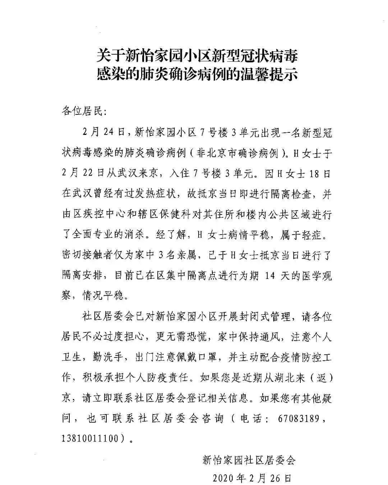

数说疫情0224：北京连续两日零增长，湖北武汉继续向好
原文链接 备份链接 全国多数省区已实现“零新增”，统计上未见疫情卷土重来证据，也未发现意味着疫情死灰复燃的个案 文/《财经》数据研究员徐进 图/《财经》视觉中心 编辑/谢丽容 今天是农历二月二“龙抬头”。按北方农村传统，今起春耕大忙开 …
2月26日，北京发布一例新冠肺炎确诊病例信息引发舆论关注。北京市东城区崇外街道新怡家园社区居委会通过微信公众号发布确诊病例提示，称H女士2月22日从武汉来京，当日被隔离检查，3名亲属已进行集中隔离医学观察，并由区疾控中心等部门对其住所和楼内公共区域进行了全面专业的消杀，请居民不必过度担心。

H女士系武汉当地监狱刑满释放人员，在武汉当地已有发热症状，2月22日由家属开车接回北京。
在新冠肺炎疫情扩散后，武汉市1月23日已经开始实行封城政策，全市城市公交、地铁、轮渡、长途客运暂停运营；机场、火车站离汉通道暂时关闭，坚决防止疫情向其他地区扩散。在武汉严格实行封城政策之际，为何该病例能够自行返京？此外，由于该确诊病例为刑满释放人员，是否符合相关条件，可以在封城之际离开武汉？
根据第一财经的采访，以及北京疾控中心26日下午发布的信息，可以初步还原该病例的离汉返京以及被收治的时间线。
2月18日开始，黄女士开始间断性发热并持续五天，伴咽部不适，当时居住地为武汉。
2月22日凌晨2时，黄女士由其北京的一位家属自行驾车抵京，经体温筛查后入住其家属所在的东城区新怡家园小区7号楼。
家属向社区报告情况并服从统一安排，22日，社区安排专人去他家门口进行封门。
22日晚上八点左右，黄女士作为武汉进京人员被送至集中隔离点隔离观察。其中一位家属也被一同接走。
2月23日19：00，黄女士因发热由急救车转运至东城区普仁医院发热门诊进行排查。
23号晚上，黄女士的其余两位家属被当作密切接触者被相关部门接走。
2月24日，黄女士在北京被确认为新冠肺炎确诊病例，并转运至市级定点医院隔离治疗。

23日，两名家属被相关部门接走
结合各方信息可发现，该病例虽然在北京被确诊，但并未纳入北京病例统计。
对这位患者的具体情况我们不好多做揣测，相信会有更多的信息被挖掘出来。我们更多关心其中的疑点，也就是匪夷所思的地方。
其一，在武汉市作为重点疫区早已采取封城措施之后，为何还有已经确诊的病例能够走出武汉。从武汉出城，到抵达自己的家中，中间的层层设防，这位患者竟然顺利通过了。难道真的像电影《天下无贼》中的一句台词：形同虚设？与此形成鲜明对比的是，第一财经2月13日曾报道称，一位回湖南探亲的人士，一家三口自驾车回工作地内蒙古最终被“劝回”，他们一家走了近3000公里。与上述这位患者相比，这中间的差别，颇为耐人寻味。
其二，武汉的封城措施是否得到了真正的贯彻落实。在疫情扩散后，武汉市1月23日已经开始实行封城政策，全市城市公交、地铁、轮渡、长途客运暂停运营；机场、火车站离汉通道暂时关闭，坚决防止疫情向其他地区扩散。这位患者的经历是否说明，在疫情防控方面，一些措施还停留在纸面上，停留在表格中，停留在视频会议中，停留在层层表态中。
今日，武汉市长热线表示：封城之后没有通道可以离开武汉，任何机构都不能办理离开武汉的通行证，只能等政府的通知。这里需要解答的是，这位患者发热后怎么不及时处理，还要放其离开武汉。如果没有“通行证”，这是不可能的，是哪个部门发放了这个“通行证”？
其三，在疫情防控过程中，是否还有一些领域的漏洞需要弥补。这可能是一个“盲区”，但“盲区”带来的影响是巨大的，甚至可能影响到疫情防控的总体走势。
其四，由于该确诊病例为刑满释放人员，这就涉及到了监狱管理体制问题，比如监狱内的服刑人员对疫情如何防控，服刑期满的释放人员如何防控等。由此而引起的后续影响不单在上述案例上，某省因为监狱的疫情，对这个时间段刑满释放人员进行了严格管控，同时，也对该监狱相关工程的施工人员进行了严格隔离。如何对特定人员进行特定防控？
2月26日下午，北京市疾控中心对黄女士病例作出回应称：根据我国《传染病信息报告管理规范》第四部分第二条规定，病例归属以发病时的住址为准。该病例发病时住址不在北京，故不属于我市发病病例。
一位知情人士也告诉第一财经，黄女士为武汉当地监狱刑满释放人员，属于武汉确认病例，应该已经纳入当地病例数据统计之中。
新怡家园社区居委会通过微信公众号发布H女士确诊病例提示时也明确表示，2月24日，新怡家园小区7号楼3单元出现一名新型冠状病毒感染的肺炎确诊病例(非北京市确诊病例)。
26日晚，第一财经记者从湖北省司法厅一位工作人员处了解到，目前正在调查了解（黄女士病例）相关情况。
新怡家园社区居委会表示，已对新怡家园小区开展封闭式管理,请各位居民不必过度担心,更无需恐慌，家中保持通风,注意个人卫生，勤洗手，出门注意佩戴口罩，并主动配合疫情防控工作，积极承担个人防控责任。
新怡家园社区居委会还提醒，近期从湖北来（返）京人员请立即联系社区居委会登记相关信息，并留下联系方式。
一位监狱系统人士告诉第一财经，在当前疫情防控期间，对刑满释放人员，应该做好衔接处置。如果他要前往外地，应告知其目前疫情防控的要求，劝阻其前往，至少监狱不得为其购买前往某地的车票或机票。
这位人士还表示，监狱方面还应通知当地或者前往目的地的防疫部门，做好收治工作。
官方数据显示，截至2月23日，湖北监狱系统现有罪犯确诊病例323人，其中武汉女子监狱279人，沙洋汉津监狱43人，省未成年管教所未1人；现有疑似病例10人。
据湖北日报报道，针对26日网传一名刑满释放新冠肺炎确诊人员离汉抵京的有关情况，湖北省委书记应勇同志作出批示：在疫情防控最吃劲的关键阶段，竟发生此类严重违反离汉离鄂通道管控的事件，绝不能允许。要迅速查清事实，依纪依法严肃处理，及时回应社会关切。此事还是否涉及其他违法违纪问题，也要彻查。不论涉及到谁，都要一查到底。离汉离鄂通道管控事关全国疫情防控大局，要坚持“全国一盘棋”，吸取教训，举一反三，切实把各项管控措施落到实处。
2月26日，经中央政法委批准，司法部牵头，由分管副部长刘志强带队，会同中央政法委、最高人民检察院、公安部组成联合调查组，赴湖北就武汉女子监狱一名刑满释放人员感染新冠肺炎到京事件展开调查。
原文链接 备份链接 全国多数省区已实现“零新增”，统计上未见疫情卷土重来证据，也未发现意味着疫情死灰复燃的个案 文/《财经》数据研究员徐进 图/《财经》视觉中心 编辑/谢丽容 今天是农历二月二“龙抬头”。按北方农村传统，今起春耕大忙开 …
原文链接 备份链接 岛语 非常时期，武汉成了全国人民挂念、祈福的城市。封城后，武汉人民的真实生活是什么样？ 武汉在发生哪些变化？ 正和岛自1月26日起特别推出“叶青专栏”。叶青是一位定居武汉40年的市民，也是一名学者和官员。在过往多期的专 …
原文链接 备份链接 岛语 非常时期，武汉成了全国人民挂念、祈福的城市。封城后，武汉人民的真实生活是什么样？ 武汉在发生哪些变化？ 正和岛自1月26日起特别推出“叶青专栏”。叶青是一位定居武汉40年的市民，也是一名学者和官员。在过往多期的专 …
原文链接 备份链接 【财新网】（记者 黄蕙昭 综合）武汉“封城”距今已有半月，疫情正呈现城市向农村蔓延、输入型向社区感染型发展的新态势。随着武汉周边地市疫情防控的严峻形势浮出水面，“湖北不止一个武汉”成舆论诉求；疫情艰难攻坚时期，如何避 …
原文链接 备份链接 02.02.2020本文字数：1995，阅读时长大约3.5分钟 导读：随着送检加快，黄冈今天确诊病例还将继续大增，但医药物资短缺等客观形势下，防控形势十分严峻。 作者 | 第一财经 陈益刊 紧邻武汉的湖北省黄冈市，新 …